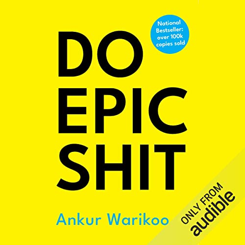

Library › Self-Improvement
Do Epic Shit — Summary & Key Lessons

India's favorite mentor distills failure, money, awareness, and entrepreneurship into truths you'll want to underline.
📖 OPEN THE FULL INTERACTIVE BREAKDOWN →🌐 Read it in Hindi, Hinglish, Gujarati, Tamil & 22 more languages — free, with audio.
💡 The Big Idea
Warikoo — founder of nearbuy.com, one of India's most-followed creators — writes the book he needed at twenty: short, sharp truths from a life of public failures and late-blooming wins (rejected by ISB twice, MIT dream abandoned, startup near-death, personal debt). Organized around failure, self-awareness, entrepreneurship, money, habits, and relationships, its power is the voice: no guru distance, just a man showing his scars and the systems that came from them. Core beliefs: success teaches nothing (failure is the syllabus), awareness precedes all growth, time and compounding beat intensity, money is freedom not status, and the epic life is built from boringly consistent days — started before you feel ready.
🧠 The 6 Key Lessons
Lesson 1: Failure Is the Curriculum
Part 1: Failure
Warikoo's opening inversion: we plan for success and are surprised by failure — when it should be the reverse, because failure is the default state of anyone attempting anything real. His reframes: failure is an event, never an identity ('I failed' ≠ 'I am a failure'); the pain of failure fades but its lessons compound, while the regret of not trying compounds forever; and public failure is a superpower — sharing your losses builds more trust than curating your wins (his own career as a creator was built substantially on failure posts, not success posts). The practical stance: run toward the rooms where you might fail, because those are the only rooms where the syllabus is taught. 'Success introduces you to the world. Failure introduces you to yourself.'
📖 Example: Warikoo's own résumé of rejection is the exhibit: dreamed of MIT and never made it; rejected by ISB twice before admission; quit a PhD in the US (family's pride, his misery) to return to India with no plan; nearbuy nearly died multiple times and was… Read the full example →
⚡ Do this: Write your failure résumé — every significant rejection, flop, and abandonment — and beside each, the one thing it taught that success couldn't have. Share one entry publicly this week; watch what honesty builds.
Lesson 2: Awareness Before Improvement
Part 2: Self-Awareness
Most people chase self-improvement while skipping self-awareness — optimizing a life they never chose, running on definitions of success installed by parents, peers, and LinkedIn. Warikoo's ordering: first watch yourself (journal, solitude, honest questions — 'am I living my calendar or someone else's?'), then improve what's actually yours. His hardest-hitting riffs: your daily calendar IS your real value system (show me your week and I'll tell you what you worship, whatever your bio claims); comparison is a losing game with no finish line (someone will always be ahead on some axis); and the questions that scare you — 'what would I do if money didn't matter?' 'whose approval am I still chasing?' — are precisely the ones to sit with. Awareness is uncomfortable because it presents the bill for every borrowed ambition.
📖 Example: Warikoo's PhD story carries the chapter: he was living his father's pride and his own inertia in a US doctorate he privately hated — the 'success' was real and entirely someone else's. The awareness moment (admitting the misery on paper) cost him the… Read the full example →
⚡ Do this: Do the calendar audit: print last week, label each block with the value it actually served (whose approval? which fear? which genuine goal?). Then answer, in writing, the scary question you've been dodging — no action required yet, just the honest answer.
Lesson 3: Money Is Freedom, Not a Scoreboard
Part 4: Money
Warikoo teaches money like someone who got it wrong first: years of credit-card debt, status purchases, and income mistaken for wealth. His rebuilt rules: money's only real product is FREEDOM — the ability to say no, to choose work, to leave — and every purchase should be priced in freedom-hours, not rupees; income is not wealth (wealth is what compounds after you stop working — assets, not salary); lifestyle inflation is the silent thief (each upgrade resets the freedom clock to zero); and compounding rewards time so brutally that the twenty-something's ₹5,000 SIP beats the forty-something's ₹50,000 one. His most Indian-specific candor: the middle-class script (degree → EMI → bigger EMI → retirement someday) is a debt treadmill wearing respectability — and the exit is boring: earn, invest the gap, wait years, tell no one.
📖 Example: His own confession anchors it: at his highest-earning corporate years, Warikoo was financially fragile — credit-card debt, no investments, income fully consumed by the life that 'someone earning this much' was supposed to display. The turnaround was… Read the full example →
⚡ Do this: Price your next significant purchase in freedom-hours (cost ÷ your true hourly earnings after tax). Automate one SIP increase this month. And write your 'enough' number — the monthly passive income at which you'd work by choice — because a target you haven't defined can't be reached.
Lesson 4: Habits: The Boring Architecture of Epic
Part 5: Habits & Time
The 'epic' in the title is a bait-and-switch Warikoo cheerfully admits: epic lives are built from profoundly boring days — sleep, exercise, reading, deep work, repeated for years while the results stay invisible. His operating principles: time is the only non-renewable asset (audit it like money — his infamous time-tracking made him realize how much 'busy' was theater); consistency beats intensity in every domain that compounds (the daily 30 minutes beats the quarterly heroic weekend); systems beat motivation (decide once, schedule it, remove the daily negotiation); and the 'someday' list is where dreams go to die — his rule is the 48-hour version: any intention not converted into a calendar entry within 48 hours was entertainment, not intention. The future is just the daily routine, extrapolated.
📖 Example: Warikoo's creator career is the demonstration: starting on social media in his forties — against every 'too late' voice — he published on a fixed schedule regardless of performance, treating consistency itself as the strategy. Years of unremarkable weeks… Read the full example →
⚡ Do this: Run the 48-hour rule starting now: every intention becomes a calendar block within 48 hours or gets consciously deleted. And pick your ONE compounding daily habit (read, write, train, build) — schedule it at the same hour for 30 days; protect the streak, not the quality.
Lesson 5: Entrepreneurship Is a Life Skill (and So Is Asking)
Parts 3, 6: Entrepreneurship & Relationships
Warikoo detaches entrepreneurship from startups: it's a POSTURE — ownership of outcomes, bias to action, comfort with uncertainty — valuable in jobs, art, and life ('you can be an entrepreneur with a salary; most founders I know are employees of their own fear'). His field notes: start before you're ready (readiness is a feeling that follows action, not precedes it); do things that don't scale to learn what actually matters; and treat your network as a garden, not a Rolodex — give first, give often, with no ledger. The companion skill nobody teaches: ASKING — for help, for intros, for the sale, for forgiveness. Most opportunities die unasked-for. And underneath everything, his relationship rule: surround yourself with people who tell you the truth and celebrate your wins without keeping score — then be that person back.
📖 Example: The asking thread runs through his story: the ISB re-application after rejection (asking the same institution to reconsider), the cold outreach that started nearbuy's pivotal partnerships, and his standing public offer to his audience — ask me anything, the… Read the full example →
⚡ Do this: Make three asks this week you've been postponing (the intro, the collaboration, the raise conversation, the apology). Separately, do two favors with zero ledger entries. Track only one metric: asks made, not answers received.
Lesson 6: Your Network Is Your Net Worth — But Only If You Give First
Relationships
Warikoo argues that relationships are the real currency of a career: opportunities, advice and trust flow through people. But the equation only works when you give before you take — help, connect, share and show up without an immediate ask. Build a reputation as a giver and opportunities find you.
📖 Example: Warikoo describes how replying to strangers' messages, mentoring juniors and sharing advice freely created a network that returned opportunities many times over. The people who received his help without being asked became his loudest advocates when doors… Read the full example →
⚡ Do this: Do one unsolicited act of help this week — a connection, an introduction, honest advice — with zero expectation of return.
✅ 5-Step Action Plan
- Write and share the failure résumé — one entry public this week.
- Audit the calendar against your claimed values; answer the scary question.
- Price purchases in freedom-hours; automate the SIP; define 'enough.'
- Enforce the 48-hour rule; protect one boring daily habit's streak.
- Three unpostponed asks, two unledgered favors.
⚠️ When This Doesn't Work
Warikoo's 'build your personal brand, live epic' energy has a shadow: the epic lifestyle funded by a business that cannot pay for it. Vijay Mallya lived the most epic life Indian business has seen — and it was paid for with airline cash that belonged to lenders and employees. Epic shit is sustainable only when the boring, unglamorous machine underneath is profitable. Be epic in output, be boring in finance.
💀 The Graveyard Proves It
🖥️ Compaq & DEC — Digital's Founder: 'No Reason Anyone Would Want a Computer at Home'. Burn: The minicomputer empire. Read the full case study →
💬 Best Quotes from Do Epic Shit
- “Success introduces you to the world. Failure introduces you to yourself.”
- “We regret the chances we didn't take far more than the ones we took and failed at.”
- “Your habits will determine your future — not your dreams.”
Interactive version: mark lessons as read, listen in your language, share quote cards.